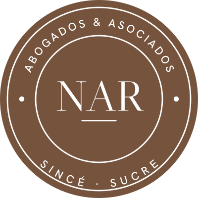

N.A.R. Abogados & Asociados
Todas las ramas
del derecho.
Un solo equipo para tu caso, sea cual sea.
- Civil
- Penal
- Familia
- Laboral
- Administrativo
- Comercial
- Constitucional
- Tránsito
- Seguridad social
- Agrario
- Notarial
- Disciplinario
…y mucho más.
Acción de tutela
10
días
es el plazo que tiene un juez para decidir tu acción de tutela.
Decreto 2591 de 1991 · art. 29
¿Te niegan un servicio de salud, una pensión o la respuesta a una petición? Protegemos tus derechos fundamentales.
¿Sabías que…?
El derecho de petición tiene plazo de respuesta
- 1Escribes tu solicitud, clara y respetuosa.
- 2La radicas ante la entidad pública o la empresa.
- 3Deben responderte de fondo en 15 días hábiles.
Ley 1755 de 2015 · art. 14
“
Cuota alimentaria
No es un favor. Es una obligación legal.
Art. 411 · Código Civil
Alimentos a los hijos
Te acompañamos para fijar, aumentar o cobrar la cuota alimentaria de tus hijos.

Agenda tu consulta
Tu tranquilidad, nuestra prioridad
LLÁMANOS304 382 3713313 699 4178301 466 6391
Sincé, Sucre · frente al D1
DemandasTutelasContratosDivorciosSucesionesPensionesTránsito